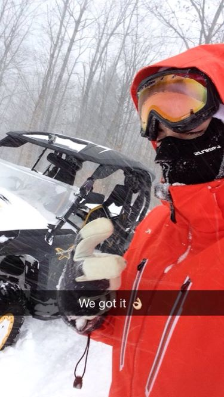

Hobbies
A couple of things a lot of people do not know about me are that I really despise the cold weather even though I grew up here in maine but I love the winter and everything it has to offer some of my favorite winter activities are

+ snowmobiling
+ skiing
+ ice fishing
+ snow tubing
+ snowbiking
Another thing not many people seem to recognize at first is my passion for mechanics. I've been around huge diesel equipment and fast cars all my life so I've grown a passion for both. My first car was a 2002 BMW with nearly 400hp, I then bought a motorcycle because my need for speed was too great. And after a couple close calls and some tickets to match, i found myself rebuilding my grandfathers old dodge cummins which has been by far the largest hit on my bank account, but also my most rewarding vehicle to date.
My trucks instagram page is:
[12v_blackbear]